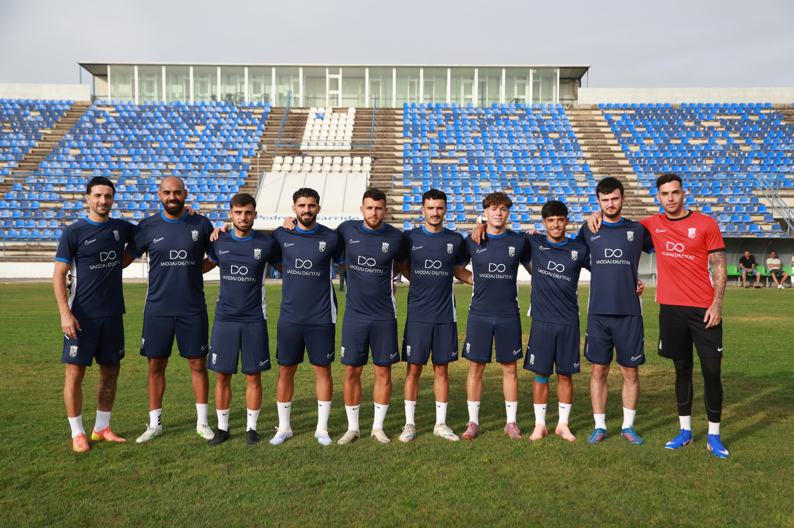

Segovia quiere hacer de Chapín un fortín

Foto: Diario XerecistaEl entrenador del Xerez CD, Abel Segovia, pidió acierto de cara a portería para el partido del domingo ante el Marbella (19:00, Chapín), un rival directo empatado a 6 puntos. Confirmó la baja de Zelu y la vuelta de Josete, y dejó la Copa del Rey a un lado: "Del miércoles ni hemos hablado ni vamos a hablar".
Solo existe el Marbella
El cruce de Copa ante el Cádiz, el miércoles en Chapín, no ha entrado en el vestuario esta semana, según el técnico: "El único partido que existe ahora mismo es el del Marbella". El Xerez llega 13.º, en puesto de play-out, y el Marbella 14.º, en descenso, con los mismos puntos.
Falta de gol tras el Lucena
Segovia no se quedó en si la derrota por 0-1 ante el Ciudad de Lucena fue injusta: "Yo no creo en la justicia o no justicia, creo en meterla o no meterla". Para el técnico, el equipo hizo un partido completo y le faltó finalizar. "Estamos generando bastantes ocasiones", añadió, y cree que el Xerez está por encima de la media en ese apartado.
Fali, de central
Sobre Fali, al que alineó como central en la última jornada, recordó que ya lo entrenó como segundo entrenador en el Nàstic y que allí rindió más en esa posición. "Si lo tenemos que utilizar de medio centro lo utilizaremos, pero yo ahora mismo lo veo de central", explicó.
Un Marbella cambiante
Del rival destacó que lleva cuatro partidos sin marcar, pero que cambia mucho de sistema: empezó con un 4-4-2 y ha pasado por el 5-2-3 y el 5-3-2. En su último partido defendía con cinco y atacaba con un 4-3-3. "Hemos trabajado las situaciones para saber contrarrestar eso. Al final tenemos que ser nosotros", dijo.
Chapín, un fortín
Segovia pidió el apoyo de la grada: "Para conseguir cualquier objetivo hay que hacer un fortín de casa". Quiere que la afición "se sienta identificada, que esté orgullosa y que en los momentos que hay que apretar, apriete".
🇬🇧 Read in English ← Volver a la portada